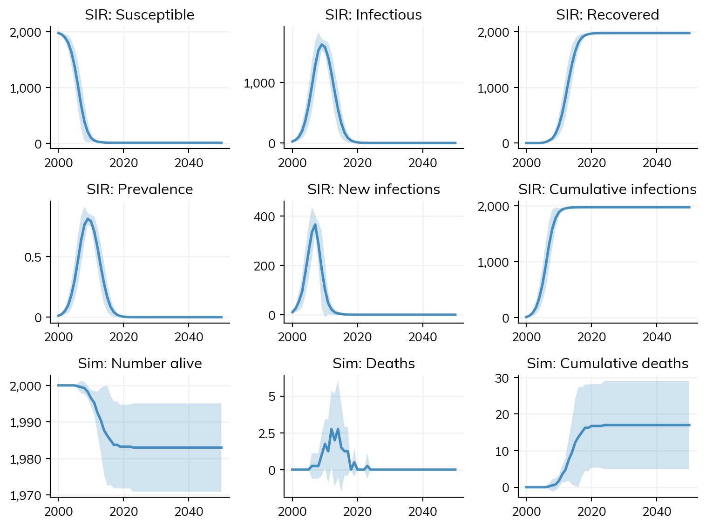
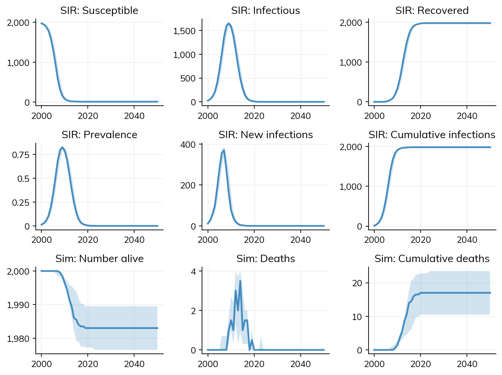

Let’s be honest, there isn’t much you can do with a single sim run. So 99.9% of the time, you’ll be wanting to run multiple simulations and compare them.
The easiest way to do this is with ss.parallel(), which, as the name suggests, runs the sim in parallel on your computer using all available cores. Let’s say we want to see what difference swapping the network makes:
Initializing sim "Sim 0" with 10000 agents
Initializing sim "Sim 1" with 10000 agents
Figure(768x576)
In most cases, this is the most efficient workflow: make some sims (potentially via a loop), and then run them. But there are some other common workflows as well. One is to run the same simulation with different random seeds. This is what happens by default if you call ss.MultiSim() with a single sim:
In addition to plotting the individual sims, we can quickly compute stats on the sim by calling msim.mean() or msim.median() (or more generally, msim.reduce() if we want to specify e.g. quantiles):
msim.mean()msim.plot()
Figure(768x576)

This looks a little wonky because the error bounds shown are ±2 standard deviations, but we know things like deaths can’t go negative. In cases like this, we get more reasonable results with median(), which by default shows the 10th and 90th quantiles:
msim.median()msim.plot()
Figure(768x576)

Copies
Both ss.Sim and ss.MultiSim objects let you control whether or not the objects passed into them are copied. By default, sims do copy inputs and multisims don’t. Let’s look at a few examples.
Sims copy inputs by default because it’s common to want to reuse a module between sims, which wouldn’t be allowed if it wasn’t copied (since it’s modified in place during run). For example:
But this can be confusing, because it means the sis in the simulation is a different object than the sis you created. If you want to keep it the same, set copy_inputs=False, for example, to use it directly afterwards:
sir = ss.SIR(beta=0.035)sim = ss.Sim(diseases=sir, networks='random', copy_inputs=False)sim.run()sir.plot() # This wouldn't work without copy_inputs=False
Conversely, ss.MultiSim() by default does not copy the input sims, so they are modified in place:
s1 = ss.Sim(diseases='sis', networks='random')s2 = ss.Sim(diseases='sir', networks='random')ss.parallel(s1, s2, verbose=0)s1.plot() # This also works, because it was run in place
Initializing sim "Sim 0" with 10000 agentsInitializing sim "Sim 1" with 10000 agents
Figure(768x576)
If you want to copy the sims before run, then set inplace=False:
s1 = ss.Sim(diseases='sis', networks='random')s2 = ss.Sim(diseases='sir', networks='random')ss.parallel(s1, s2, verbose=0, inplace=False)s1.run().plot() # This now works, because the sim was *not* run in place
A common pattern for more complex workflows is to write make_sim(). The example below, based on an STIsim application, shows how complex a make_sim() function can get (this is, after all, where most of the science happens!):
If your make_sim() function is computationally expensive, you can parallelize it using sc.parallelize(), e.g.
# Make the argumentsiterkwargs = []for seed inrange(100):for n_agents in [1e3, 2e3, 5e3, 10e3]: iterkwargs.append(dict(seed=seed, n_agents=n_agents))# Make the simssims = sc.parallelize(make_sim, iterkwargs=iterkwargs)